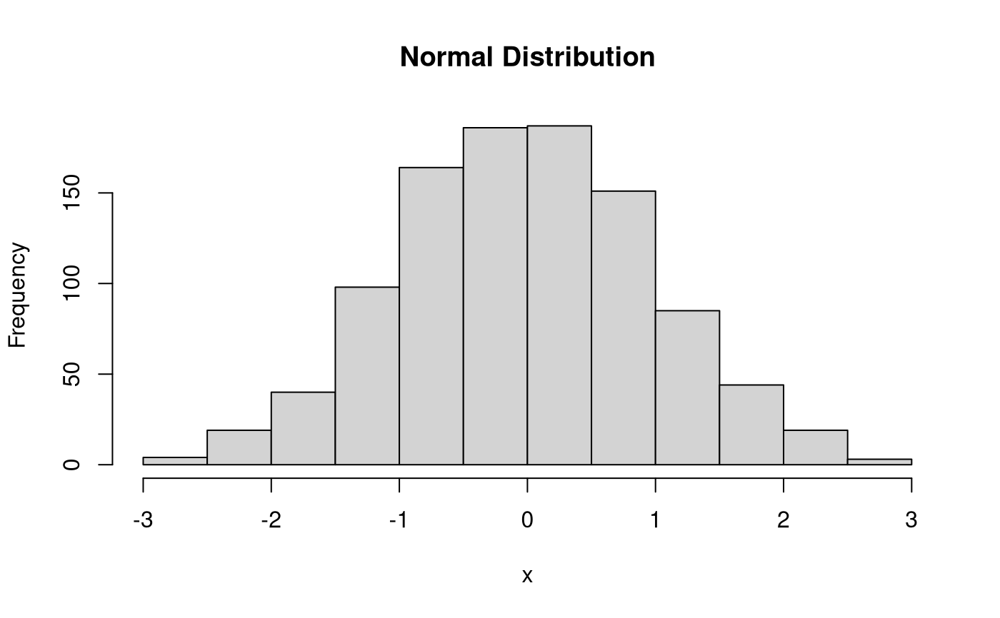
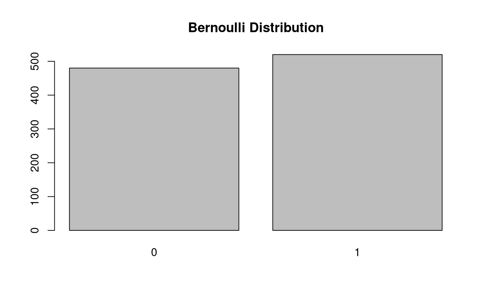
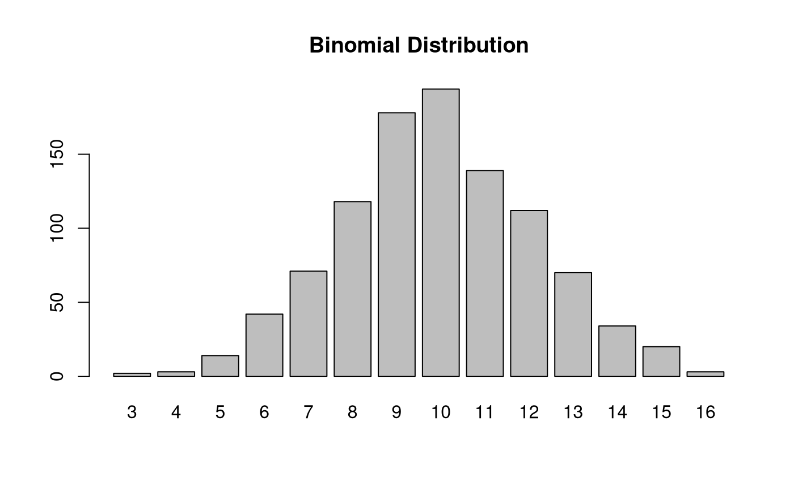
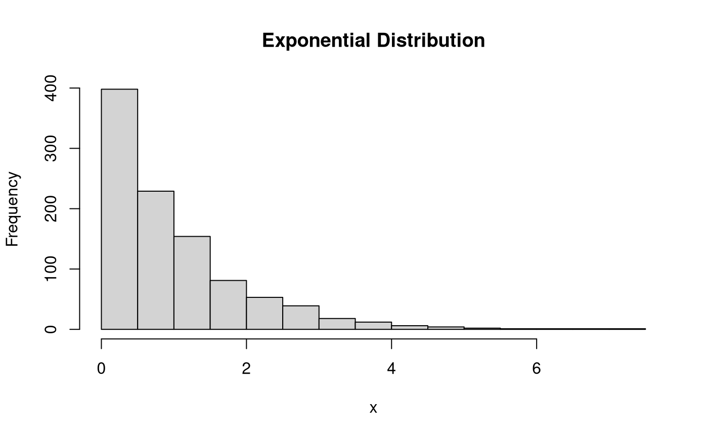

Generates an \(n \times 1\) univariate data vector
or a list of \(n \times 1\) univariate data vectors of length R.
The default data generating function
is the normal distribution
$$
X
\sim
\mathcal{N}
\left(
\mu,
\sigma^2
\right) .
%(\#eq:dist-X-norm)
$$
univ( n, rFUN = rnorm, ..., R = NULL, par = FALSE, ncores = NULL, mc = TRUE, lb = FALSE, cl_eval = FALSE, cl_export = FALSE, cl_expr, cl_vars, rbind = NULL )
| n | Integer. Sample size. |
|---|---|
| rFUN | Function. Data generating function to generate univariate data. |
| ... | Arguments to pass to |
| R | Integer.
Number of Monte Carlo replications.
If |
| par | Logical.
If |
| ncores | Integer.
Number of cores to use if |
| mc | Logical.
If |
| lb | Logical.
If |
| cl_eval | Logical.
Execute |
| cl_export | Logical.
Execute |
| cl_expr | Expression.
Expression passed to |
| cl_vars | Character vector.
Names of objects to pass to |
| rbind | NULL or logical.
If |
If R = NULL or R = 1,
returns an
\(
n \times 1
\)
univariate data vector
generated using rFUN and parameters passed to ....
If R is an integer greater than 1,
(e.g., R = 10)
returns a list of length R of
\(
n
\times 1
\)
univariate data vector
generated using rFUN and parameters passed to ....
The univariate distribution and parameters used
in the data generating process
can be specified using rFUN and ....
Options for explicit parallelism are provided
when R > 1 especially when R is large.
See par and suceeding arguments.
n <- 1000 R <- 5 # normal distribution--------------------------------------------------------- mu <- 0 sigma2 <- 1 sigma <- sqrt(sigma2) x <- univ(n = n, rFUN = rnorm, mean = mu, sd = sigma) str(x)#> num [1:1000] -0.511 -0.895 -0.991 1.474 0.402 ...#> List of 5 #> $ : num [1:1000] -0.0353 -2.5796 -1.6272 1.2568 0.014 ... #> $ : num [1:1000] -0.267 0.148 -2.443 0.257 0.188 ... #> $ : num [1:1000] -0.332 0.931 1.691 0.66 -1.114 ... #> $ : num [1:1000] -1.38 0.57 0.902 0.684 0.298 ... #> $ : num [1:1000] 0.58 0.409 0.414 0.729 -2.56 ...# bernoulli distribution------------------------------------------------------ n_trials <- 1 p <- 0.50 x <- univ(n = n, rFUN = rbinom, size = n_trials, prob = p) str(x)#> int [1:1000] 0 1 0 1 1 1 1 0 1 1 ...#> List of 5 #> $ : int [1:1000] 0 1 0 1 0 0 0 0 0 1 ... #> $ : int [1:1000] 0 1 1 1 1 1 1 1 0 1 ... #> $ : int [1:1000] 0 1 1 1 0 0 1 0 1 1 ... #> $ : int [1:1000] 0 1 0 0 0 1 1 0 0 1 ... #> $ : int [1:1000] 0 1 1 1 0 1 1 0 0 1 ...# binomial distribution------------------------------------------------------- n_trials <- 20 p <- 0.50 x <- univ(n = n, rFUN = rbinom, size = n_trials, prob = p) barplot(table(x), main = "Binomial Distribution")str(x)#> int [1:1000] 7 9 12 9 6 10 9 13 13 9 ...#> List of 5 #> $ : int [1:1000] 9 6 9 10 11 10 8 9 14 11 ... #> $ : int [1:1000] 9 9 11 11 8 10 9 15 8 11 ... #> $ : int [1:1000] 12 11 14 10 10 13 14 12 14 9 ... #> $ : int [1:1000] 14 8 10 11 7 6 9 11 11 12 ... #> $ : int [1:1000] 11 9 10 9 9 10 8 11 11 8 ...# exponential distribution---------------------------------------------------- rate <- 1 x <- univ(n = n, rFUN = rexp, rate = rate) hist(x, main = "Exponential Distribution")str(x)#> num [1:1000] 1.346 0.259 1.112 0.767 2.968 ...#> List of 5 #> $ : num [1:1000] 6.2 0.154 0.573 3.002 1.342 ... #> $ : num [1:1000] 1.206 0.772 0.981 0.159 3.346 ... #> $ : num [1:1000] 1.8961 0.4627 0.0147 0.9453 0.6 ... #> $ : num [1:1000] 0.0458 1.0754 1.7085 0.1172 1.4202 ... #> $ : num [1:1000] 0.9039 0.2908 2.285 2.7018 0.0932 ...# rbind = TRUE---------------------------------------------------------------- set.seed(42) univ(n = 5, rFUN = rnorm, R = 5, rbind = TRUE, mean = mu, sd = sigma)#> [,1] [,2] [,3] [,4] [,5] #> [1,] 1.3709584 -0.5646982 0.36312841 0.6328626 0.4042683 #> [2,] -0.1061245 1.5115220 -0.09465904 2.0184237 -0.0627141 #> [3,] 1.3048697 2.2866454 -1.38886070 -0.2787888 -0.1333213 #> [4,] 0.6359504 -0.2842529 -2.65645542 -2.4404669 1.3201133 #> [5,] -0.3066386 -1.7813084 -0.17191736 1.2146747 1.8951935# rbind = FALSE--------------------------------------------------------------- set.seed(42) univ(n = 5, rFUN = rnorm, R = 5, rbind = FALSE, mean = mu, sd = sigma)#> [,1] [,2] [,3] [,4] [,5] #> [1,] 1.3709584 -0.10612452 1.3048697 0.6359504 -0.3066386 #> [2,] -0.5646982 1.51152200 2.2866454 -0.2842529 -1.7813084 #> [3,] 0.3631284 -0.09465904 -1.3888607 -2.6564554 -0.1719174 #> [4,] 0.6328626 2.01842371 -0.2787888 -2.4404669 1.2146747 #> [5,] 0.4042683 -0.06271410 -0.1333213 1.3201133 1.8951935